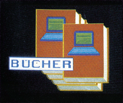
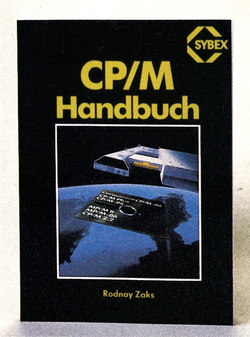
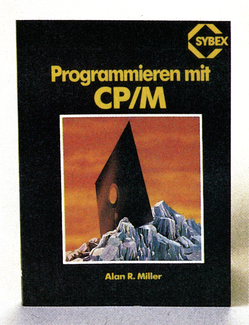

Bücher

Das CP/M Handbuch

Fast jeder Mensch, der zum ersten Mal vor einem Computer sitzt, sehnt sich nach einer verständlichen Schritt-für-Schritt-Bedienungsanleitung. Da man in diesem Punkt von den meisten mitgelieferten Begleitbüchern alleingelassen wird, entstand für CP/M das Handbuch von Rodnay Zaks. Schon der Name des Autors verspricht ein methodisch sehr gut aufbereitetes Werk. So fällt es dem absoluten Neuling anhand des ersten Kapitels nicht schwer, seinen Computer störungsfrei in Betrieb zu nehmen, CP/M zu starten und die ersten Befehle auszuführen. Hier wird erfolgreich die Angst vor Fehlern abgebaut und dem Leser Sicherheit im Umgang mit der für ihn ungewohnten Technik vermittelt.
Darauf aufbauend erklärt der Autor die Bedienung der wichtigsten CP/M-Systemprogramme PIP und ED in allen Einzelheiten. Sehr hilfreich ist hierbei die Verwendung von einfachen Beispielen, so daß der Anwender sämtliche Schritte im Buch und auf dem Computer gleichzeitig vollziehen kann. Nach dem Durcharbeiten dieser Kapitel besitzt man die nötigen Kenntnisse, um mit CP/M zurecht zu kommen.
Nun gibt es aber Probleme, die über den normalen Rahmen hinaus gehen, wie zum Beispiel die Veränderung der nutzbaren Speichergröße. Zur Lösung solcher Probleme hat Rodnay Zaks die Struktur und den internen Aufbau aller CP/M-Versionen (CP/M-80, MP/M, CCP/M, CP/M-86, CP/M-Plus, MP/M-86) beschrieben. Des weiteren werden teilweise Installationshilfen geboten. Die Nutzung dieser Informationen setzt aber einige Erfahrungen im Umgang mit CP/M voraus, so daß Anfänger hier schnell überfordert sind.
Am Ende des Buches befindet sich eine große Übersicht aller CP/M-Systembefehle in Art eines Nachschlagewerkes mit kurzen Beispielen zu jedem Befehl.
Erwähnenswert ist ein Kapitel, das der Pflege von Computer und Zubehör gewidmet ist und zusätzlich einige käufliche Dienstprogramme zur Datenpflege vorstellt. Außerdem gibt es eine Liste mit Adressen von CP/M-User-Groups und Softwarehäusern sowie eine Tabelle, in der viele Fachbegriffe aus der Computersprache erklärt werden.
Es wird deutlich, daß der Autor die Belange und Wünsche von Anfängern genau kannte. Das abgerundete und komplette Werk ist dadurch insbesondere für Computerneulinge äußerst empfehlenswert.
(Guido Weckwerth/bj)Rodnay Zaks, CP/M Handbuch, Sybex-Verlag, ISBN: 3-88745-053-1, 310 Seiten, zweite überarbeitete und erweiterte Ausgabe, Preis: 48 Mark
Programmieren mit CP/M

Viele Anwender, die mit CP/M vertraut sind, möchten mehr als nur die Benutzerebene dieses Betriebssystems kennenlernen. Alan R. Miller führt den Leser in kleinen Schritten an dieses Ziel, nämlich Assemblerprogrammierung in der Betriebssystemebene heran.
Der Autor beginnt mit der Darlegung der Organisation und Arbeitsweise von CP/M. Von diesem Grundstock aus werden die einzelnen Gebiete des Betriebssystems erläutert und für den Leser aufbereitet. Von der Änderung des BIOS über den Diskettenzugriff unter BDOS bis zur ausführlichen Darstellung des Aufbaus von Directories unter CP/M wird alles erklärt, was der Programmierer wissen muß, um die vorhandenen Systemroutinen für seine eigenen Programme zu nutzen. Eine große Hilfe sind die dabei angeführten und erläuterten Assembler-Makros. Damit wurde für den Anwender eine große Makrobibliothek geschaffen, auf die bei der Entwicklung von eigenen Programmen zurückgegriffen werden kann. Zudem wird der behandelte Stoff anhand der Beispiele leichter verständlich.
Am Schluß des Buches finden sich sämtliche Tabellen, die zur Arbeit mit CP/M benötigt werden (ASCII, BDOS-Routinen). Allerdings hätte die Aufzählung der Z80- und 8080-Befehle nicht so ausführlich ausfallen müssen. Bei den benötigten Kenntnissen in der Programmierung von Z80-/8080-Assembler, die zum Verständnis dieses Buches vorausgesetzt werden, ist die Beherrschung dieser Befehle notwendig. Zusätzlich sollten ein Makroassembler und gute Kenntnisse in der Bedienung von CP/M vorhanden sein, möchte man echten Nutzen aus diesem Buch ziehen. Das Werk ist also nicht für Anfänger gedacht. Sind aber die obigen Voraussetzungen erfüllt, so eröffnet sich dem Leser eine Fundgrube an Wissen und Programmen.
Eine kleine Einschränkung gilt für C 128-Anwender: Das vermittelte Wissen und die verwendeten Programme beziehen sich auf CP/M-80. Da aber CP/M plus aufwärtskompatibel zu CP/M-80 ist, ergeben sich nur in wenigen Fällen Schwierigkeiten, die mit etwas Probieren zu meistern sind. Dennoch ist dieses Buch hervorragend geeignet, um tiefere Einblicke in die Systemprogrammierung von CP/M zu bekommen.
(Guido Weckwerth/bj)Alan R. Miller, Programmieren mit CP/M, Sybex-Verlag, ISBN: 3-88745-077-9, 418 Seiten, Preis: 52 Mark
Grafik auf dem C 64
Das Durchblättern dieses Buches ist eine Augenweide: Mehr als 100 Abbildungen zeigen viele schöne Grafiken. Dabei handelt es sich ausschließlich um Bilder, die von den vielen dokumentierten Beispielprogrammen erzeugt werden. Da diese in Simons Basic geschrieben sind, ist der Nutzen für diejenigen, die über diese Erweiterung nicht verfügen, nicht ganz so groß; allerdings werden alle wichtigen Befehle sukzessiv erklärt, so daß man die zirka 70 Beispiele leicht übertragen kann (zum Beispiel auf GBasic oder das Basic 7.0 des C 128), zumal in der Regel nur die elementaren Befehle (Grafik einschalten, Punkte und Linien zeichnen etc.) eingesetzt werden. Die Programmerklärungen setzen oft solide mathematische Kenntnisse voraus, sofern man die jeweilige Materie verstehen will und sich nicht lediglich an den schönen Grafiken erfreuen möchte. Fairerweise muß jedoch gesagt werden, daß dies nicht am Buch oder dessen Aufbereitung liegt, sondern durch die mathematischen und physikalischen Grundlagen bedingt ist.
Wer sich für die theoretischen Grundlagen der Computergrafik begeistern läßt, findet die entsprechenden Informationen mit einer seltenen Gründlichkeit; außer den gängigen Algorithmen (Linie ziehen, Punkt setzen) werden auch Routinen für Bildschirmfenster, ebene Polygonzüge, Approximationen und 3D-Darstellungen (inklusive »Hidden Line«-Algorithmus), sowie Differentialgleichungssysteme vorgestellt. Oft kann man nur über die Leistungsfähigkeit der Routinen staunen, ohne aber deren Sinn zu begreifen.
Resümee: Den Einstieg in die Grafikprogrammierung des C 64 findet man mit diesem Buch nicht — dazu wird ein zu hoher Kenntnisstand vorausgesetzt —, aber der fortgeschrittene Grafikfan und/oder Mathematiker kann daraus interessante Techniken und Beispiele entnehmen, die man in anderer Literatur oft schmerzlich vermißt. Völlige Grafik-Einsteiger sind jedoch mit anderen Werken für ihren Start in dieses Gebiet besser beraten.
(Florian Müller/bj)Walter Bachmann, Grafik auf dem C 64, Westermann Schulbuchverlag, ISBN: 3-14-138811-4, 205 Seiten, Preis: 29,80 Mark; Diskette mit Beispielprogrammen in Simons Basic: Bestellnummer 13 8011, Preis: 49 Mark